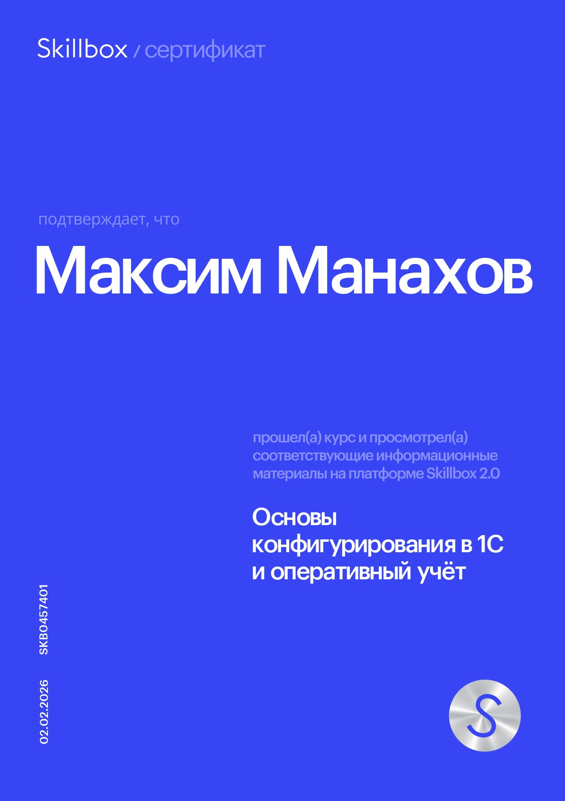
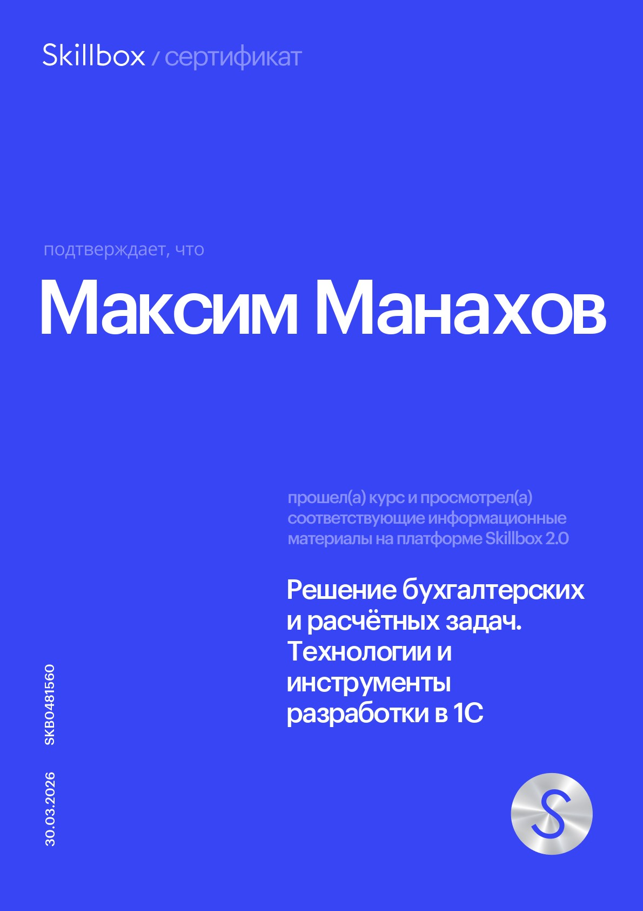
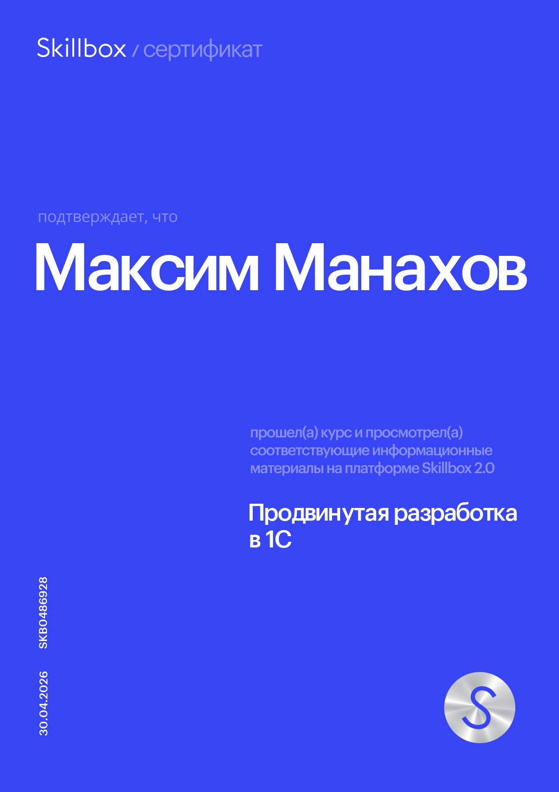
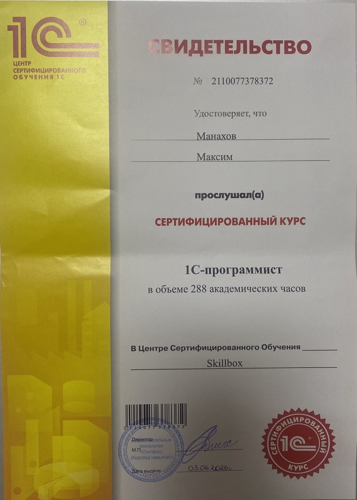
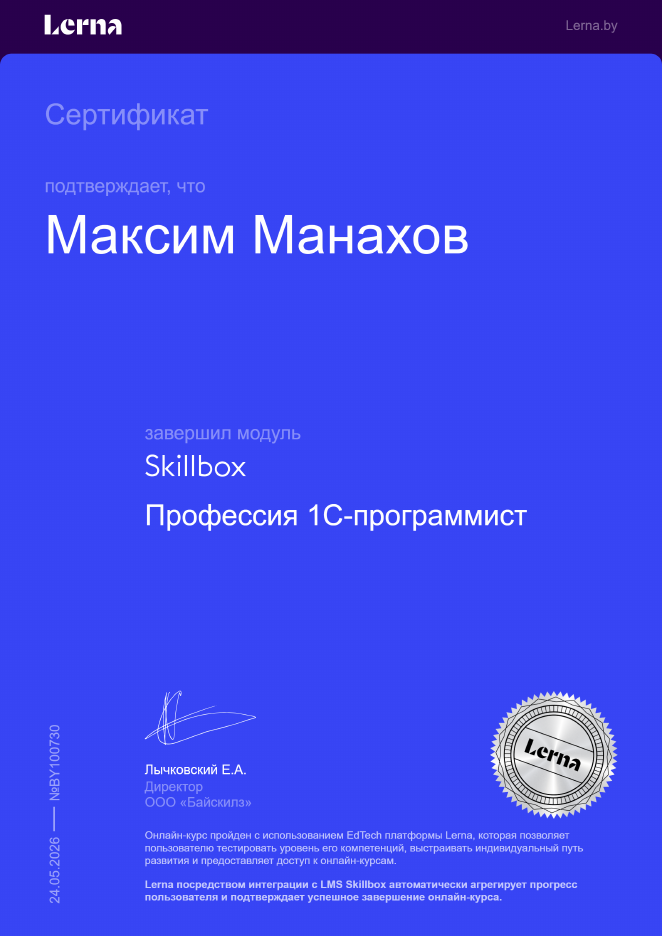

Максим Манахов,
программист 1С
Начинающий 1С-разработчик из Гомеля. Прошёл сертифицированный курс «1С-программист» (288 академических часов, Skillbox) и сделал три проекта: CRM, автоматизацию отеля и доработку типовой конфигурации через расширения. Раньше работал в рознице и знаю 1С глазами пользователя. Рассматриваю стажировку, проектную работу, офис и удалёнку.
Проекты
1. Самописная CRM для компании по продаже мобильной техники
Модуль «Основы конфигурирования в 1С и оперативный учёт». Разработка с нуля.
Спроектировал структуру данных и создал подсистему CRM: менеджеры хранят историю переговоров, планируют напоминания и видят все данные по клиенту в одной карточке.
- Статусы контрагентов и предупреждение в заказе, если с клиентом больше не работаем.
- Документ «Взаимодействие» и регистр сведений «Напоминания».
- Регистр «Документы по контрагентам»: заказы, отгрузки и платежи в одном месте.
- Прогрессивная скидка по годовому объёму закупок. В проведённом заказе процент не пересчитывается.
- Печатная форма «Счёт на оплату» с логотипом и скидкой, отчёт «Продажи по покупателям» на СКД.

2. Информационная система отеля «Точка останова»
Модуль «Решение бухгалтерских и расчётных задач. Технологии и инструменты разработки в 1С». Доработка каркасной конфигурации с подсистемами БСП.
Учётная система для отеля: от бронирования номера до расчёта зарплаты сотрудников.
- Документ «Бронирование»: клиент, гости, даты, номер и дополнительные услуги. Цены номеров и услуг хранятся в периодическом регистре сведений.
- Контроль занятости: при проведении бронь записывается в регистр по каждому дню. Если номер занят на выбранные даты, документ не проводится.
- Печатная форма счёта на оплату через подсистему «Печать» БСП.
- Документ «Оплата» и регистр накопления «ВзаиморасчетыСКлиентами». Клиент может платить частями, отчёт показывает задолженность и переплату.
- Расчёт зарплаты: оклад по графику работы, премия, отпуск и больничный. Отпуск и больничный вытесняют оклад.
- Отражение зарплаты в бухучёте: проводки Дт 26 – Кт 70 со статьями затрат.
- Роли для менеджеров и бухгалтеров через группы и профили доступа БСП.

3. Модификация учётной системы «Альфа-Трейд» на БСП
Модуль «Продвинутая разработка в 1С». Доработка по регламенту заказчика без снятия конфигурации с поддержки.
Типовые объекты изменены только через расширение (.cfe) с аннотациями &Перед, &После и &ИзменениеИКонтроль. Новые объекты созданы в основной конфигурации с префиксом СБ_. Код прокомментирован по правилам заказчика.
- Учёт себестоимости: регистр накопления остатков по номенклатуре и складам. Проведение поступления и реализации делает движения, контролирует остатки и списывает себестоимость по средней цене.
- Внешний отчёт на СКД (.erf) «Анализ остатков и себестоимости»: вычисляемое поле средней себестоимости и три варианта настроек.
- Проверка контрагентов: поле и кнопка «Обновить маркер» добавлены на форму программно. Кнопка отправляет HTTP-запрос к сервису, разбирает JSON-ответ и присваивает статус надёжности. История проверок хранится в периодическом регистре сведений.
- Документ «Перемещение товаров» и внешняя печатная форма ТОРГ-13 (.epf), подключённая через встраиваемые обработки БСП.
- План обмена с филиалом: настроен состав объектов.
- Новый вид расчёта зарплаты «Премия»: план видов расчёта, регистр расчёта и расчёт от базы за предыдущий период.

Сертификаты


Навыки
- Платформа 1С:Предприятие 8.3: управляемые формы, клиент-серверная архитектура, встроенный язык.
- Язык запросов и оптимизация, отчёты на СКД.
- Регистры сведений, накопления и бухгалтерии, планы видов характеристик.
- Печатные формы, внешние обработки, расширения конфигурации, БСП.
- Роли и права доступа, RLS.
- Интеграция и обмен данными: HTTP и веб-сервисы, XML, JSON.
- Командная разработка через хранилище конфигурации. Excel и Google Sheets.
Обо мне
Работал в магазине «Зообазар» продавцом и комплектовщиком заказов. Работал в «1С:Розница» и «1С:Управление торговлей», на кассе и в Битриксе. Сам настроил в Excel контроль сроков годности и автоматизировал ведомости инкассации. Так заинтересовался программированием и перешёл в ИТ. Сейчас изучаю базовый курс «1С:Аналитик», чтобы точнее собирать требования заказчика.
Контакты
Почта: manakhov2003@gmail.com
Telegram: @pivnoe_pusiko
LinkedIn: maxim-manakhov